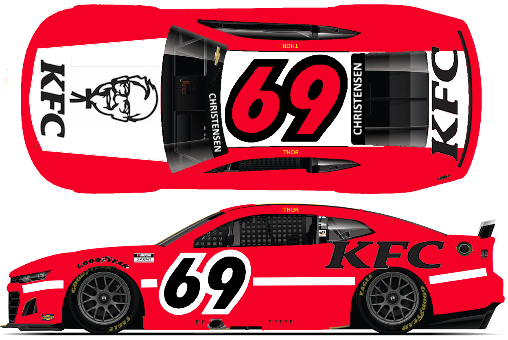

Spire No. 69 - 2025 NASCAR Cup Series
-TEAMS AND DRIVERS-
-RACE DASHBOARD-
-POINT STANDINGS-
-PAINT SCHEMES-
-HOW THE REGULAR SEASON WORKS-
-HOW THE PLAYOFFS WORK-
2025 NASCAR CUP SERIES #69 SPIRE MOTORSPORTS PAINT SCHEMES

Kentucky Fried Chicken will sponsor Lyle Christensen in seventeen races and the Clash.